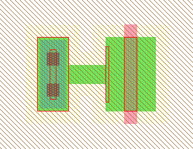
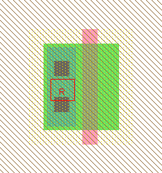

<!-- NEED 4in -->

<!-- HEADER 1-10-6: IC Layout Tutorial: Adding Contacts to a Transistor -->

<TABLE><TR><TD>
One very common structure in IC layout is the transistor-contact combination.
Here you will see the proper way to construct it.
<P>
<TABLE><TR>
<TD><CENTER></CENTER></TD><TD>
<UL>
<LI>Start with a transistor (in this example on the left, an n-transistor).</LI>
<LI>Rotate the transistor so that the gate is vertical.
To do this, use the <B>90 Degree Counterclockwise</B> command
(in menu <B>Edit / Rotate</B>), or just type Control-J.</LI>
<LI>Note that the active gate on the left is highlighted (it is just a line).</LI>
</UL>
</TD><TD><CENTER></CENTER></TD></TR></TABLE>
<P>
<TABLE><TR>
<TD><CENTER></CENTER></TD><TD>
Although the default transistor is 2x3 in size, most people want them to be wider.
For the purposes of this example, make the transistor be 12 wide.
To do this, select the node and use the <B>Object Properties</B> command
(in menu <B>Edit / Properties</B>).
Two easier ways to see the objects properties are to double-click on the node,
or select it and type Control-I.
When the "node Properties" dialog appears, make the width 12 and click OK.
</TD><TD><CENTER></CENTER></TD></TR></TABLE>

<TABLE><TR>
<TD><CENTER></CENTER></TD><TD>
Next we need a contact.
Choose a "Metal-1-N-Active-Con" to connect the N-Active to Metal-1.
Make its size be 5x12 instead of the default 5x5.
Notice that contacts are "smart" about the cuts, and add them to fill the node.
Note also that the port (the inner rectangle) grows with the node.
</TD><TD><CENTER></CENTER></TD></TR></TABLE>
<P>
Designers who have used polygon-based systems will be tempted to move these two nodes
together so that they form the desired structure:
<P>
<CENTER><TABLE><TR><TD><CENTER></CENTER></TD>
<TD><CENTER><FONT SIZE="7">THIS IS WRONG!</FONT></CENTER><BR>
Electric is a connectivity-oriented system, and insists that these components be wired together.
</TD></TR></TABLE></CENTER>
<P>
The easiest way to connect the contact to the transistor is to spread the nodes apart,
wire them, and then push them back together.
<P>
<TABLE><TR>
<TD><CENTER></CENTER></TD><TD>
These two figures show the transistor and contact nodes, spread apart, and connected by an arc.
</TD><TD><CENTER></CENTER></TD></TR></TABLE>
On the left, the nodes and their ports; on the right, the arc.
<P>
The arc was made by selecting one node,
clicking and HOLDING the <I><A HREF="chap01-08.html#chap01-08">right</A></I> button,
dragging the mouse over the other component, and then releasing the button
to create the arc.
<P>
Notice that the ends of an arc are centered and indented from the edge by half of the arc's width
(the ends are illustrated by "+" on the right).
The ends of an arc must sit inside of the ports.
If an arc moves such that its ends are still in the ports, then the nodes don't have to move.
See <A HREF="chap05-04-03.html#chap05-04-03">Section 5-4-3</A> for more
arc arc geometry.
<P>

<CENTER><TABLE><TR><TD><CENTER></CENTER></TD>
<TD><CENTER><FONT SIZE="7">THIS IS RIGHT!</FONT></CENTER><BR>
Now that the nodes are wired together, bring the contact in close.
Notice that the arc has shrunk down to a square, with the endpoints very close together.
If you make the arc rigid, the two nodes will be held together in this configuration.
To do this, use the <B>Rigid</B> command (in menu <B>Edit / Arc</B>).
As shown here, the "R" on the selected arc tells you that it has been made rigid.
See <A HREF="chap05-02-01.html#chap05-02-01">Section 5-2-1</A> for more
arc constraints.
</TD></TR></TABLE></CENTER>
<P>
Another common situation in making contacts meet transistors is when the sizes are not the same.
In this example, the contact is the default size.
<P>

<TABLE><TR>
<TD><CENTER></CENTER></TD><TD>
The arc runs from the center of the contact's port to the top of the transistor's port.
The finished layout is shown on the right.
</TD><TD><CENTER></CENTER></TD></TR></TABLE>
<P>
Here are some points about connecting nodes with arcs:
<UL>
<LI>By doing it, the system understands your circuit connectivity and uses
it in many other places.</LI>
<LI>The design-rule checker will flag objects that touch but are not connected.</LI>
<LI>After you create one of these structures, it can be copied-and-pasted many times.
Use the <B>Copy</B> and <B>Paste</B> commands (in menu <B>Edit</B>).
Note that when pasting, you must not have anything selected, or else it tries
to replace the selected objects with the copied objects.
Therefore, to duplicate some circuitry, select it, <B>Copy</B>, click away to deselect,
and then <B>Paste</B>.
<LI>If you want to rotate or mirror these structures,
select all of it (both nodes and the arc) and use the <B>Rotate</B> or
<B>Mirror</B> commands (in menu <B>Edit</B>).</LI>
</UL>

<!-- TRAILER -->
